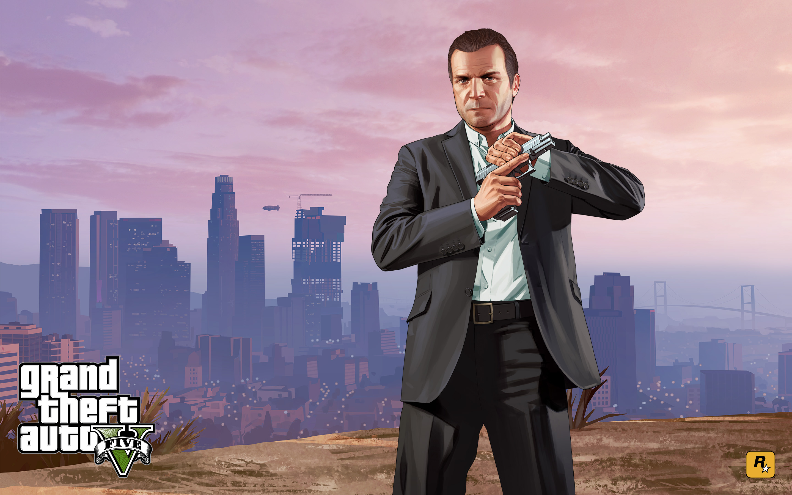
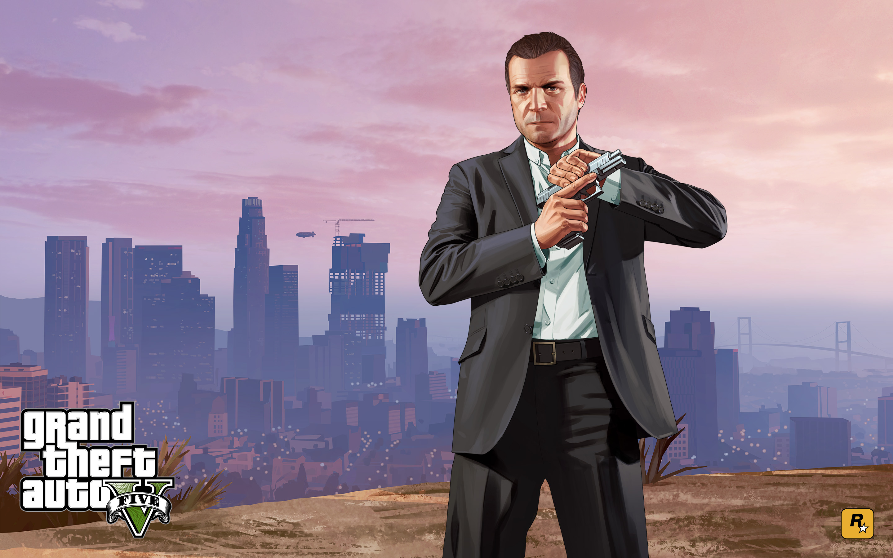

GRAND THEFT AUTO V
Sobre o jogo
Los Santos: uma vasta metrópole ensolarada repleta de gurus de autoajuda, estrelas de cinema e celebridades em decadência, que já foram o orgulho do mundo ocidental e que agora lutam para se manterem em uma época de incerteza econômica e reality shows baratos.
Dentro deste cenário, três criminosos, muito diferentes entre si, planejam suas oportunidades de sobrevivência e sucesso: Franklin, um malandro que busca por boas oportunidades de ganhar muito dinheiro; Michael, um ex-assaltante profissional cuja aposentadoria não é bem o mar de rosas que esperava ser; e Trevor, um maníaco violento que pensa somente na próxima dose e na bolada que pode conquistar. Sem muitas opções, a equipe arrisca tudo em uma série de golpes ousados que podem garantir o resto de suas vidas.
Grand Theft Auto V é o jogo de mundo aberto mais dinâmico, mais variado e mais extenso já desenvolvido. Combina história e jogabilidade de um novo modo, enquanto os jogadores entram e saem repetidamente da vida dos três protagonistas do jogo. Graças a essa dinâmica, participam de todos os aspectos de suas histórias entrelaçadas.
Todas as características clássicas da inovadora série de jogos estão de volta, incluindo a incrível atenção aos detalhes e o humor cínico de Grand Theft Auto sobre a cultura moderna, somados a uma nova e ambiciosa abordagem no modo multijogador de mundo aberto.